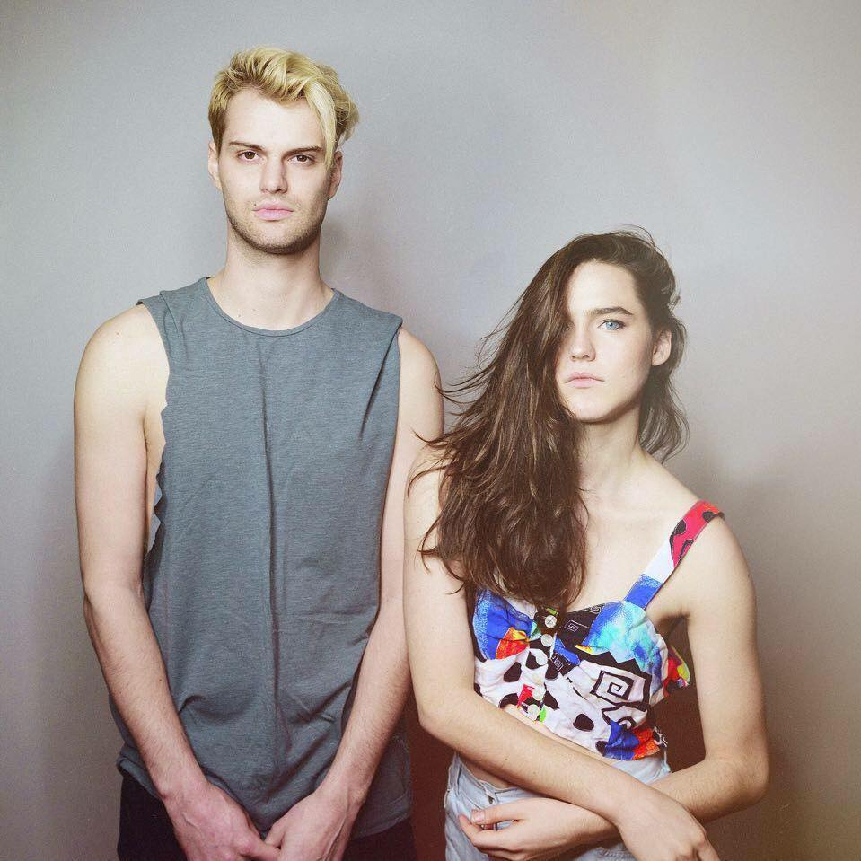

SOFI TUKKER
Sofi Tukker (often styled as SOFI TUKKER) is a New York-based musical duo consisting of Sophie Hawley-Weld and Tucker Halpern. They released an EP, Soft Animals on July 8, 2016. The EP includes "Drinkee", "Matadora", "Awoo", Déjà Vu Affair, Moon Tattoo and "Hey Lion". The title comes from a Mary Oliver poem ("You only have to let the soft animal of your body love what it loves"). Their song "Drinkee" from the Soft Animals EP was nominated for a 2017 Grammy for Best Dance Recording."Drinkee" is adapted from a poem written by the Brazilian poet, Chacal, sung sensually amidst cowbells, bongos, electric guitars and deep driving bass.
FOLLOW THEM